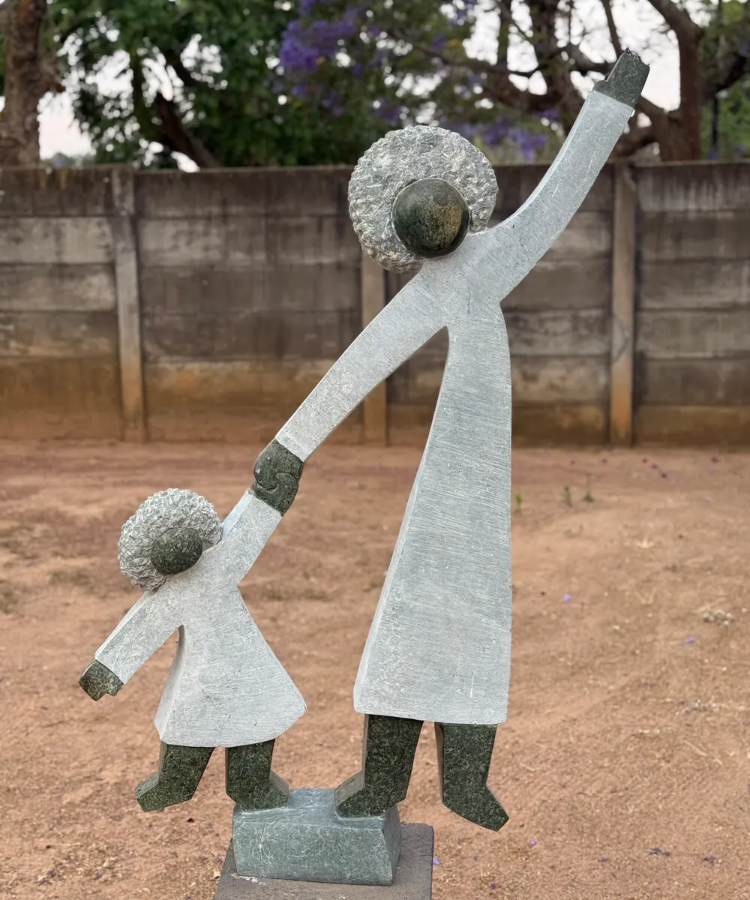
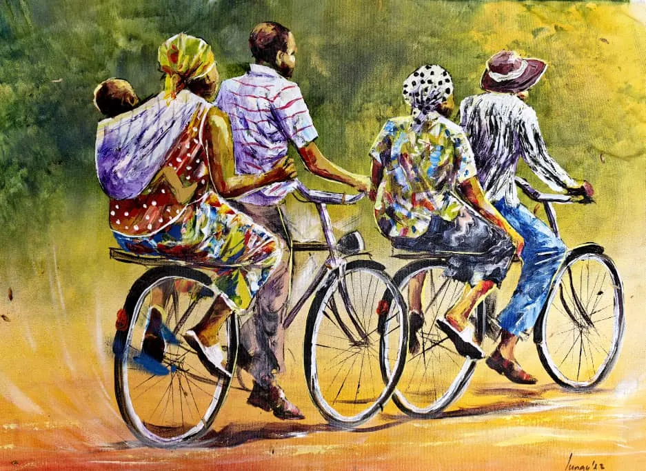
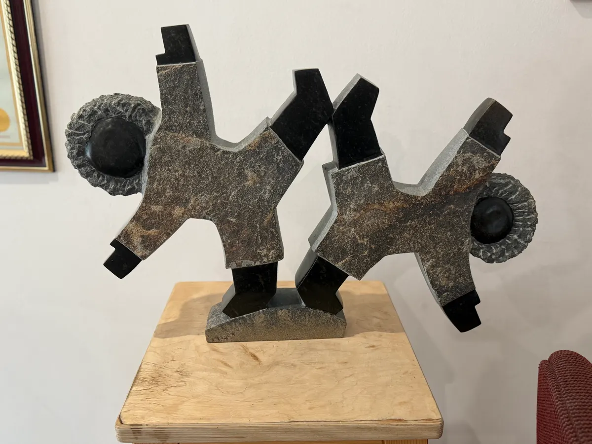
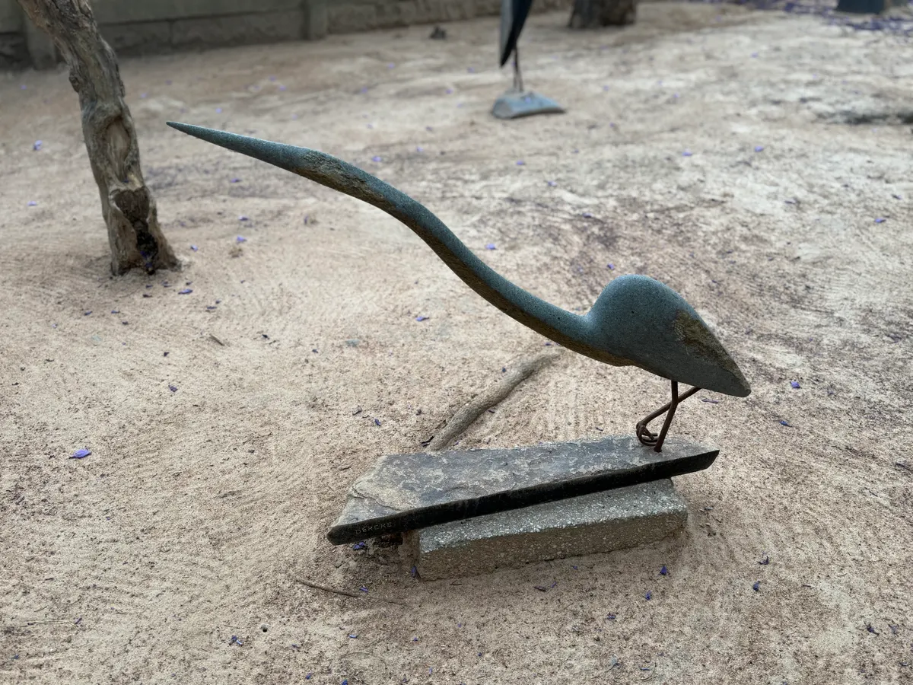
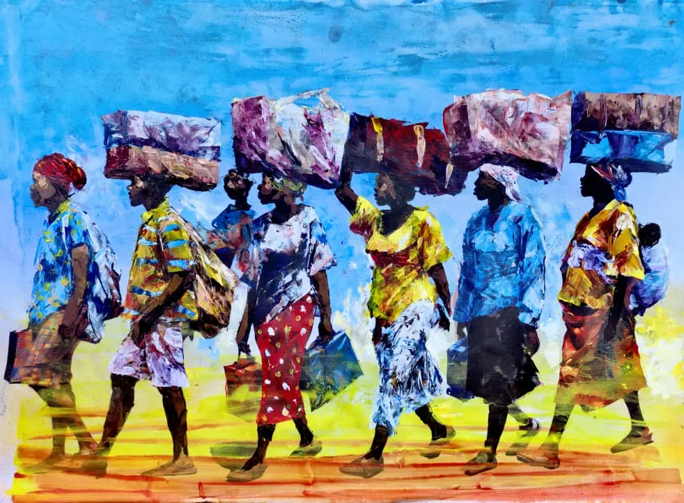
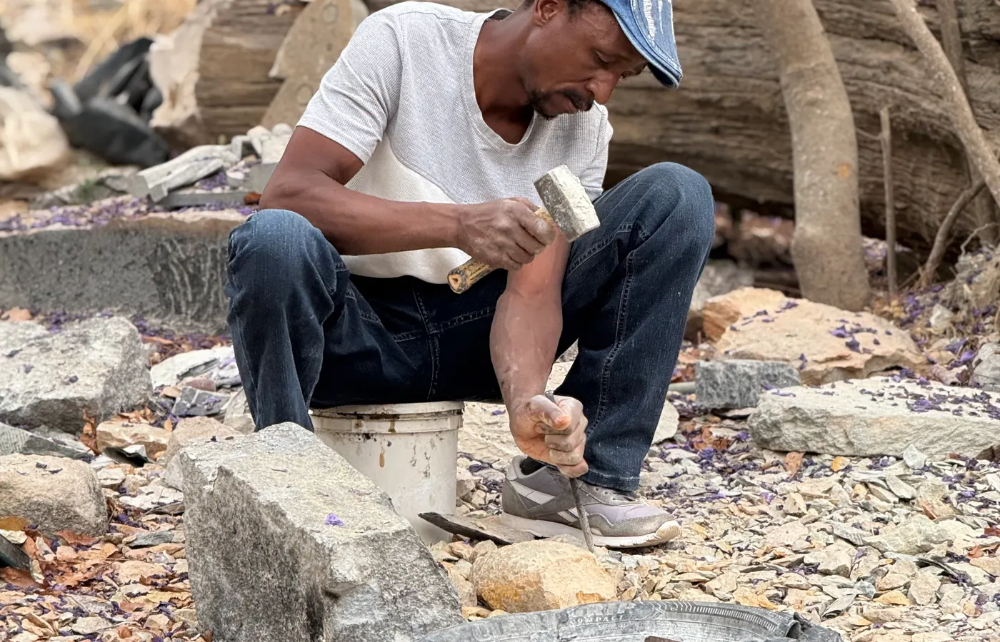
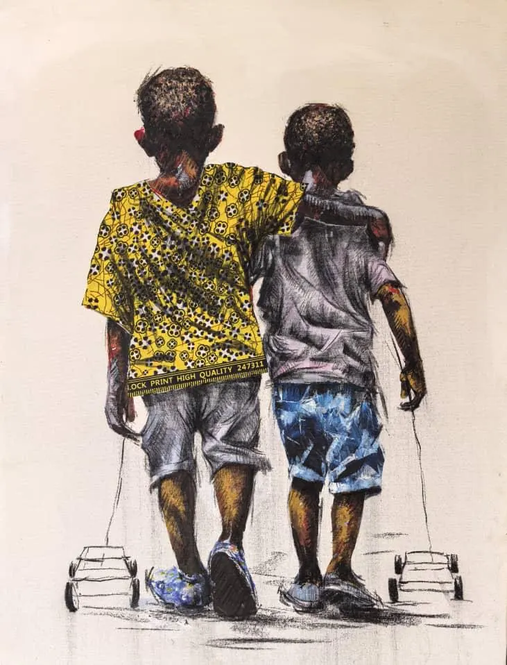

Kunst aus Simbabwe
Kunst ist eine Brücke.
Kunst ist kein Nebenprojekt. Sie ist Ausdruck von Respekt: Simbabwe begegnet uns hier nicht nur über Bedürftigkeit, sondern über Kreativität, Würde und kulturelle Kraft.
Mehr als Fundraising
Skulpturen und Bilder machen Haltung sichtbar.
Die Verbindung zur Kunst ist über viele Jahre gewachsen. Besonders Shona-Skulpturen und zeitgenössische Gemälde zeigen die Ausdruckskraft simbabwischer Künstlerinnen und Künstler und schaffen einen Zugang, der jenseits von Projektzahlen funktioniert.
Fair gekauft, respektvoll gezeigt.
Die Stiftung kauft seit vielen Jahren direkt von Künstlern in Simbabwe. Der Verkauf von Werken kann Projekte unterstützen, aber der Kern bleibt Begegnung: Familie, Hoffnung, Verletzlichkeit und Würde werden in diesen Arbeiten sichtbar.
- Shona-Skulpturen und Gemälde aus Simbabwe
- Faire Partnerschaft mit Künstlerinnen und Künstlern
- Erlöse unterstützen Bildungs- und Wasserprojekte
Galerie
Formen, Farben und Geschichten.
Diese Auswahl zeigt den Bereich bewusst nicht als Shop, sondern als Galerie. Später können Werkangaben, Künstlernamen, Preise und Anfragen ergänzt werden.






Kunst überwindet Distanzen, ohne Unterschiede zu glätten.
Genau deshalb passt dieser Bereich zur Stiftung: Er zeigt Simbabwe nicht nur als Ort der Hilfe, sondern als Land mit eigener Stimme, Schönheit und kultureller Kraft.
Kunstorte
Harare, Chitungwiza, Tengenenge.
Auf der alten Website werden Künstlerorte wie Harare, Chitungwiza und Tengenenge sichtbar. Für die neue Seite ist das als eigener Strang vorbereitet: Galerie, Künstlerporträts, Ausstellungen und Anfragen können wachsen.